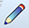
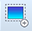
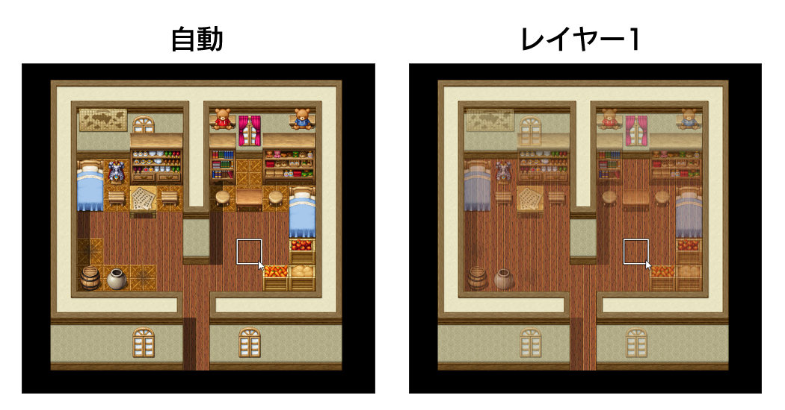

RPG TKOOL MZ HELP
マップ

マップデザインの編集
基本的な編集方法
-
編集モードの切り替え
マップのデザインを編集するには、ツールバーの［マップ］のボタン（またはメニューの［モード］→［マップ］を）クリックして編集モードを切り替えます。
マップデータの選択
ウィンドウ左下のマップリストで編集対象のマップデータをクリックで選択します。そのマップの形状がウィンドウ右側のマップビューに表示されます。
タイルの選択
タイルパレットから描画するタイルをクリックで選択します。選択中のタイルは白枠で囲まれます。タイルパレットに表示されるタイルは、下にあるA～Eのタブをクリックすると切り替えられます。
タイルパレット上をドラッグすると、その範囲のタイルをまとめて描画対象に指定できます。 -
描画ツールの選択と描画
ツールバーでタイルの描画に使うツール（下記の5種類）をクリックで選択します。そのうえで、ウィンドウ右側のマップの表示エリア（マップビュー）をクリックまたはドラッグするとタイルが描画されます。各ツールは［描画］メニューからでも選択できます。
描画したタイルは、透明のタイルを描画することで消去できます。上層用は［B］タブの左上にあるものが透明タイルです。-  鉛筆
- クリックした場所に選択中のタイルを描画します。
-  四角形
- ドラッグの始点と終点を結ぶ線を対角線とする四角形の内部に選択したタイルを敷き詰めます。
 楕円
楕円- ドラッグの始点と終点を結ぶ線を対角線とする四角形の範囲に、楕円状に選択したタイルを描画します。
- 塗りつぶし
- クリックした位置のタイルと、その位置から同種のタイルが連続する範囲にタイルを描画します。
 影ペン
影ペン - クリックした位置に影がない場合は影を追加し、ある場合は影を削除します。Shiftキーを押しながら操作すると、ドラッグの始点と終点を結ぶ線を対角線とする四角形の内部に対し、影を追加または削除します。
-
スポイト機能
マップビュー上で右クリックすると描画されているタイルをコピーし、左クリックでコピーした内容を貼り付けることができます。右クリックを押したままドラッグすると、範囲選択のコピーができます。
その他の編集機能
-
オートタイル
タイルパレットの［A］タブに表示されるタイルには、“オートタイル”と呼ばれる機能を持ったものが含まれています。オートタイルは1種類のタイルに複数のパターンを持っており、並べ方に応じて境界が自動的に調節されます。オートタイルの機能を持つタイルは、データベース［タイルセット］にて［A1］～［A4］に指定されているものです。
なお、オートタイルの機能は、［Shift］キーを押しながらタイルの描画やスポイトを行なうことで一時的に無効にすることができます。 -
影の自動生成
オートタイルの中には、縦に2タイル以上並べることで、自動的にその右下のタイルに影が描画されるものがあります。ただし、特定のタイルには影が描画されません。
-
影ペン
影ペンは、壁や建物の影を描画するツールです。タイルの1/4の大きさの単位で色合いを暗くすることができます。
編集するには、ツールバーの［影ペン］のボタン（またはメニューの［描画］→［影ペン］）をクリックし、マップビュー上をクリックします。影のない部分をクリックすると影を描画し、すでに影のある部分をクリックすると影を消去します。

-
上層タイルの特殊仕様
- B～Eの上層マップを2種類重ね合わせる事ができます。
※3種類目を重ねると、1種類目の上層タイルが消えます。
※3種類目が2種類目と同じタイルの場合、1種類目は消えません。
※Bの左上のタイルのみ、すべての上層タイルを消すことができます。 - 通行可と不可のタイルが重なっている場合は、後で置いたタイルの情報が優先されます。
※通行が☆のタイルが下になっていても、表示順序は☆が上になります。
※通行が☆のタイルを重ねた場合、通行不可のタイルの情報が優先されます。
- B～Eの上層マップを2種類重ね合わせる事ができます。
-
下層タイルの特殊仕様
タイルパレットの［A］タブに表示されるタイルのうち、［タイルセット］の設定で［A2］にあたるもの（タイルパレット上で上から3～6段目）は、“ベース”（左から1～4列目、左半分）と“装飾”（左から5～8列目、右半分）のタイルにわかれています。装飾のタイルは、ベースのタイルに重ねて配置可能です。
ただし、［タイルセット］の設定で［モード］が［フィールドタイプ］になっているタイルセットでは、ベースの2列目か4列目のタイルに重ねて装飾のタイルを配置した場合、ベースのタイルが1列目または3列目のものに変化します。 -
マップレイヤーの選択機能
マップの編集モードでレイヤーを切り替えます。個別のレイヤーを選択すると、他のレイヤーに影響を与えずにマップを編集することができます。
通常は［自動］のままでマップ作成可能ですが、各レイヤーを使い分けるとマップを細かく作り込むことができます。
レイヤー選択中は、選択レイヤーに配置したタイルが強調されます。
強調されたタイルのみ編集可能なため、上層タイルを使って装飾した後、下層タイルだけ一括変更したい場合などに活用できます。
図は[自動]と[レイヤー1]、それぞれでタイルを配置したものです。
[レイヤー1]の設定で部屋の床タイルだけが一括変更されていることがわかります。 自動
自動- マップ描画時に自動でレイヤーを選択します。
 レイヤー1
レイヤー1- レイヤー1を選択した状態です。
 レイヤー2
レイヤー2- レイヤー2を選択した状態です。
 レイヤー3
レイヤー3- レイヤー3を選択した状態です。
 レイヤー4
レイヤー4- レイヤー4を選択した状態です。